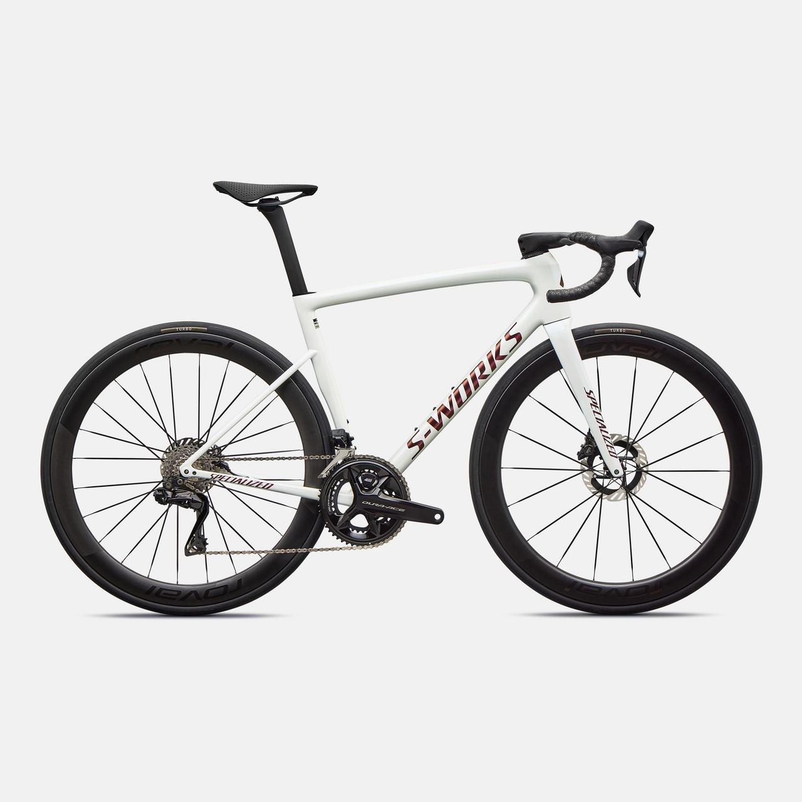
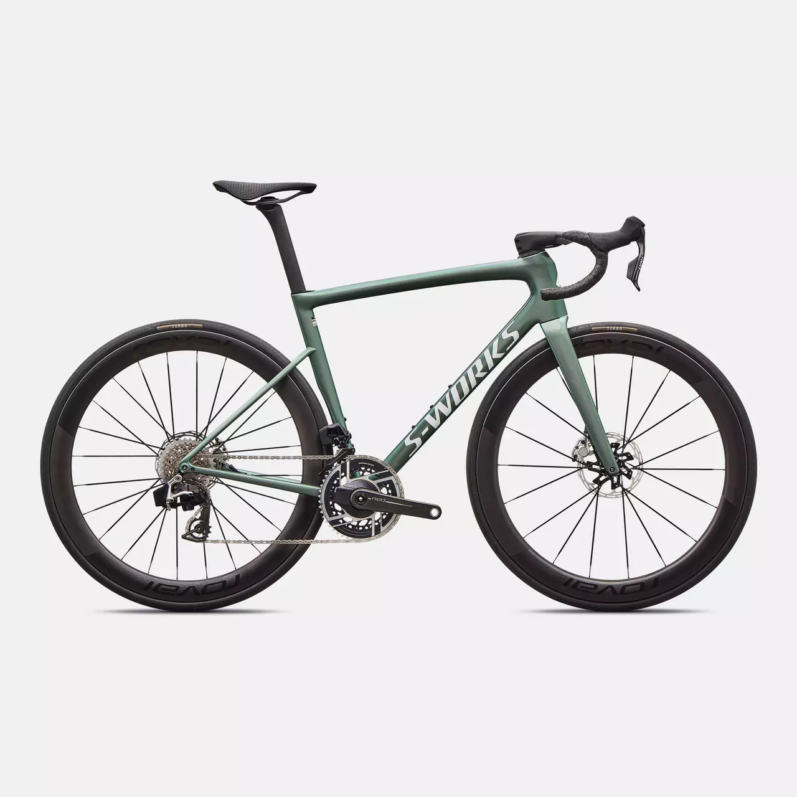

SPECIALIZED Tarmac SL7
NEG2340923445230948

Variante
Taglia
900,00€
Descrizione
La Tarmac è stata creata per essere veloce, senza 'se' e senza 'ma', ed è qualcosa in più di un capolavoro di aerodinamica. Il leggerissimo telaio Rider-First Engineered fornisce un'eccellente qualità di guida per tutte le misure di telaio. Questa Tarmac ti aiuterà a conquistare i tuoi nuovi record personali, KOM e a salire sul podio. La bici più veloce su qualsiasi strada. La Tarmac Sport ha un telaio SL7, monta il gruppo meccanico Shimano 105 a 12 velocità - una bici all-round leggera ad un prezzo ragionevole.
Dettagli
- L'aerodinamica è stato importante per lo sviluppo della Tarmac e di tutte le nostre bici da corsa, ma anche la leggerezza è una caratteristica fondamentale per le bici da corsa.
- Sempre con l'obiettivo di sviluppare la migliore bici per l'agonismo su strada, abbiamo utilizzato la nostra tecnologia Rider-First Engineere, per garantire che la Tarmac fosse bilanciata e maneggevole in ogni misura di telaio.
- Nel percorso per creare la Tarmac, abbiamo creato un cockpit pulito ed integrato. Il passaggio cavi è predisposto per qualsiasi configurazione - compreso cambio meccanico, un attacco tradizionale, manubri dal diametro tondo, eccetera.
Gallery
